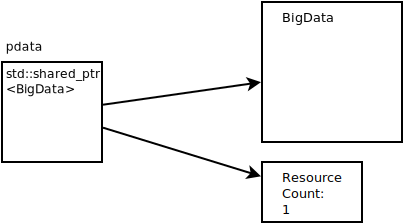
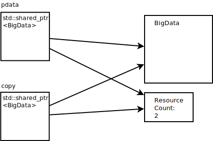

std::shared_ptr¶
Spirit: Not Unique, But Shared (i.e. Reference Counted)¶
Ownership is not always clear …
Rare occasions where shared ownership is the right design choice
… laziness, mostly
If in doubt, say
std::shared_ptr
#include <memory>
std::shared_ptr<MyClass> ptr(
new MyClass(666));
|
 |
Methods¶
Object of type std::shared_ptr behave like pointers in any respect
(->, *, copy, …), except that they have methods:
Method |
Description |
|---|---|
|
Initializes to |
|
Initializes to |
|
Move constructor; |
|
Replaces the managed object if any, possibly deleting it if
refcount reaches zero. |
|
Pointer to currently managed object |
std::shared_ptr: Copy¶
Copying is what shared pointer are there for
shared_ptr<MyClass> ptr(
new MyClass(666));
shared_ptr<MyClass> copy1 = ptr;
shared_ptr<MyClass> copy2 = copy1;
|
 |
std::shared_ptr vs. std::unique_ptr¶
How do std::shared_ptr and std::unique_ptr compare?
std::unique_ptrSmall - size of a pointer
Operations compile away entirely
No excuse not to use it
Have to think more though
std::shared_ptrSize of two pointers
Copying manipulates the resource count. Expensive: atomic instructions - memory barriers
Copying manipulates non-adjacent memory locations
Usage is very easy (no
std::moveand such)
Attention
Cyclic references possible!
No garbage collection as in Java
⟶ Leak!!
See below …
std::shared_ptr: Object Lifetime¶
How long does the pointed-to object live?
Reference count is used to track shared ownership
When reference count drops to zero, the object is not referenced anymore
⟶ deleted
Examining the reference count
shared_ptr<MyClass> ptr(new MyClass(666));
auto refcount = ptr->use_count();
Attention
Do not make any decisions based on it - at least not when the pointer is shared among multiple threads!
std::shared_ptr: Juggling¶
Clearing: shared_ptr<MyClass> ptr(
new MyClass(666));
auto copy = ptr;
ptr.reset();
|
|
Filling: shared_ptr<MyClass> ptr;
ptr.reset(new MyClass(666));
|
|
Demo: Basic Usage¶
#include "sensors.h"
#include <gtest/gtest.h>
#include <memory>
TEST(shared_ptr_suite, basic)
{
std::map<std::string, std::shared_ptr<Sensor>> sensors;
std::shared_ptr<Sensor> rs1{new RandomSensor{20, 40}};
std::shared_ptr<Sensor> rs2{new RandomSensor{10, 30}};
std::shared_ptr<Sensor> cs{new ConstantSensor{36.5}};
auto temp = rs1->get_temperature();
ASSERT_TRUE(temp>=20 && temp<=40);
ASSERT_EQ(rs1.use_count(), 1);
sensors["rand1"] = rs1;
sensors["rand2"] = rs2;
sensors["const"] = cs;
ASSERT_EQ(rs1.use_count(), 2);
// shared ownership: cann access sensors from map *and* from
// outside references
ASSERT_DOUBLE_EQ(cs->get_temperature(), 36.5);
ASSERT_DOUBLE_EQ(sensors["const"]->get_temperature(), 36.5);
}
Demo: std::make_shared¶
#include "sensors.h"
#include <gtest/gtest.h>
#include <memory>
TEST(shared_ptr_suite, basic_make_shared)
{
std::map<std::string, std::shared_ptr<Sensor>> sensors;
auto rs1 = std::make_shared<RandomSensor>(20, 40);
auto rs2 = std::make_shared<RandomSensor>(10, 30);
auto cs = std::make_shared<ConstantSensor>(36.5);
auto temp = rs1->get_temperature();
ASSERT_TRUE(temp>=20 && temp<=40);
sensors["rand1"] = rs1;
sensors["rand2"] = rs2;
sensors["const"] = cs;
// shared ownership: can access sensors from map *and* from
// outside references
ASSERT_DOUBLE_EQ(cs->get_temperature(), 36.5);
ASSERT_DOUBLE_EQ(sensors["const"]->get_temperature(), 36.5);
}
Demo: Cyclic References¶
#include "sensors.h"
#include <gtest/gtest.h>
#include <memory>
class NonSense
{
public:
void set_reference(std::shared_ptr<NonSense> ref)
{
_ref = ref;
}
private:
std::shared_ptr<NonSense> _ref;
};
TEST(shared_ptr_suite, cyclic_reference)
{
std::shared_ptr<NonSense> cycle(new NonSense);
cycle->set_reference(cycle);
}
$ valgrind ./c++11-smartptr --gtest_filter=shared_ptr_suite.cyclic_reference
==303549== Memcheck, a memory error detector
==303549== Copyright (C) 2002-2017, and GNU GPL'd, by Julian Seward et al.
==303549== Using Valgrind-3.18.1 and LibVEX; rerun with -h for copyright info
==303549== Command: ./c++11-smartptr --gtest_filter=shared_ptr_suite.cyclic_reference
==303549==
Running main() from /home/jfasch/work/jfasch-home/googletest/googletest/src/gtest_main.cc
Note: Google Test filter = shared_ptr_suite.cyclic_reference
[==========] Running 1 test from 1 test suite.
[----------] Global test environment set-up.
[----------] 1 test from shared_ptr_suite
[ RUN ] shared_ptr_suite.cyclic_reference
[ OK ] shared_ptr_suite.cyclic_reference (8 ms)
[----------] 1 test from shared_ptr_suite (13 ms total)
[----------] Global test environment tear-down
[==========] 1 test from 1 test suite ran. (38 ms total)
[ PASSED ] 1 test.
==303549==
==303549== HEAP SUMMARY:
==303549== in use at exit: 40 bytes in 2 blocks
==303549== total heap usage: 515 allocs, 513 frees, 134,791 bytes allocated
==303549==
==303549== LEAK SUMMARY:
==303549== definitely lost: 16 bytes in 1 blocks
==303549== indirectly lost: 24 bytes in 1 blocks
==303549== possibly lost: 0 bytes in 0 blocks
==303549== still reachable: 0 bytes in 0 blocks
==303549== suppressed: 0 bytes in 0 blocks
==303549== Rerun with --leak-check=full to see details of leaked memory
==303549==
==303549== For lists of detected and suppressed errors, rerun with: -s
==303549== ERROR SUMMARY: 0 errors from 0 contexts (suppressed: 0 from 0)